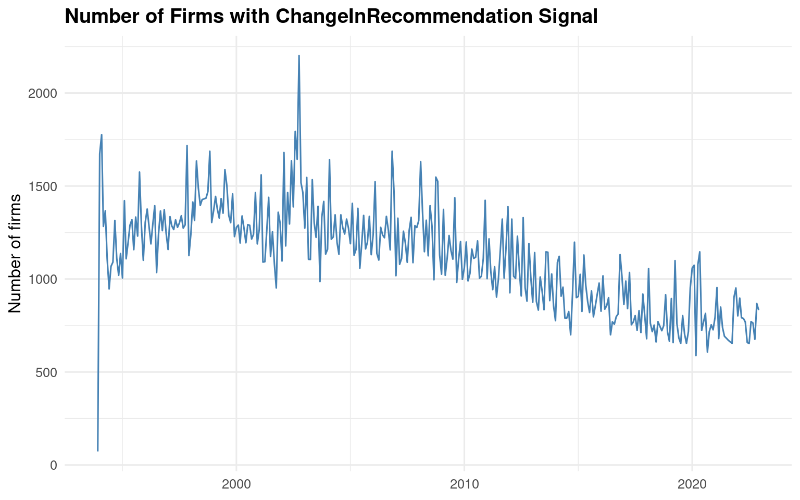
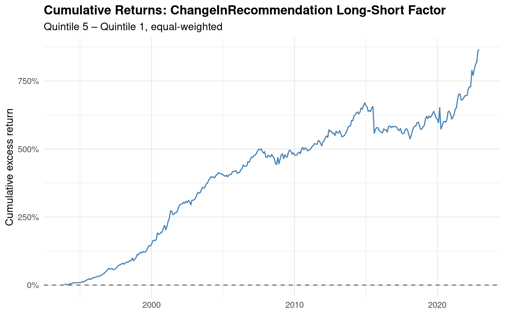

Signal-based Asset Pricing: Replicating the Change in Analyst Recommendation Factor
Empirical Methods 2026 — Seminar Paper
1 Introduction
This paper replicates and evaluates the ChangeInRecommendation signal from Chen and Zimmermann (2022), which originates from Jegadeesh, Kim, Krische, and Lee (2004). The signal captures the quarterly change in sell-side analysts’ consensus stock recommendation. JKKL show that while the level of analyst consensus loses predictive power after controlling for momentum and other characteristics, the change in consensus remains a robust cross-sectional return predictor that appears to contain information orthogonal to a large set of quantitative signals.
The economic intuition is straightforward: when analysts collectively revise their recommendations upward (downward), this reflects new private or semi-private information about a firm’s prospects that has not yet been fully impounded into prices. Unlike the level of the recommendation — which JKKL show is heavily contaminated by a “glamour bias” driven by sell-side incentive structures — changes strip out this persistent bias and isolate the incremental information content of analyst research.
This paper proceeds as follows. Section 2 describes the data. Section 3 constructs the long-short factor portfolio and benchmarks it against Table 2 of Chen and Zimmermann (2022). Section 4 tests the factor’s pricing power against CAPM, FF3, FF-C4, and FF5. Section 5 evaluates whether augmenting existing models with the new factor improves their ability to price test portfolios. Section 6 examines factor competition. Section 7 compares our results to the literature and discusses replication quality. Section 8 presents cross-sectional Fama-MacBeth regressions, and Section 9 concludes.
A note on data availability: C&Z (2022) explicitly state in Table 2 that they lack the data to reproduce the ChangeInRecommendation signal themselves, as it relies on Zacks analyst data unavailable through WRDS. The values reported in C&Z Table 2 (mean return 1.04%, t-stat 6.65) are therefore JKKL’s own original estimates, standardised to a monthly format. Our replication is thus the first IBES/WRDS-based implementation of this signal within the C&Z standardised framework.
2 Data
2.1 Database Connection and Signal Identification
We use the tidy_finance.sqlite database, which contains CRSP monthly stock data pre-merged with the Chen and Zimmermann (2022) signal characteristics.
The resulting sample covers 388,877 stock-month observations for 12,272 unique firms over the period December 1993 to December 2022 (349 months with valid signal data after lagging). Factor data is available for 738 months over the same window.
2.2 Descriptive Statistics
The ChangeInRecommendation signal is discrete and lumpy: many stocks experience no change in consensus recommendations in a given month, producing a large mass at zero. JKKL (2004, Table II Panel B) explicitly handle this by placing all “no change” stocks in the middle quintile, resulting in unequal-sized portfolios.
| Mean | Median | SD | P5 | P25 | P75 | P95 | Frac = 0 |
|---|---|---|---|---|---|---|---|
| -0.0238 | 0 | 1.094 | -2 | -1 | 1 | 2 | 0.2547 |
The signal has a mean of −0.024 and a median of 0, confirming a slight negative skew: analysts are marginally more likely to downgrade than upgrade, consistent with JKKL (2004, Table II Panel B) who report a mean change of −0.01 in their sample. The standard deviation of 1.09 indicates meaningful dispersion around zero.
The percentiles reveal the discrete, lumpy nature of the signal: P25 = −1 and P75 = +1 mean that at least half of all non-zero observations move by exactly one unit (a single-notch recommendation change). The tails (P5 = −2, P95 = +1) are modest, suggesting that multi-notch revisions are rare.
Most importantly, 25.5% of observations are exactly zero — roughly one in four stock-months experiences no change in consensus. This is a defining feature of the signal that JKKL explicitly address by placing all “no change” firms into the middle quintile. It also means the extreme portfolios (quintiles 1 and 5) are composed entirely of stocks with actual downgrades or upgrades, giving them cleaner signal content.

3 Factor Construction and Replication
3.1 Portfolio Sorting Methodology
JKKL (2004) use quintile sorts (5 portfolios), report equal-weighted returns, and note that the middle quintile absorbs all “no change” firms, producing unequal-sized portfolios (Table II, Panel B). Chen and Zimmermann follow each original paper’s sorting scheme for their Table 2 replication, but standardize the breakpoint computation to use NYSE-listed stocks only to prevent small-cap Nasdaq stocks from distorting the cutoffs.
We therefore implement the following:
- Primary specification (C&Z Table 2 match): Quintile sorts, NYSE breakpoints, equal-weighted returns — consistent with both JKKL’s design and C&Z’s standardization.
- Robustness: Value-weighted returns and decile sorts for comparison.
| portfolio | Mean N per month | Mean signal |
|---|---|---|
| 1 | 130.28 | -1.86 |
| 2 | 281.73 | -0.81 |
| 3 | 160.62 | -0.04 |
| 4 | 320.31 | 0.16 |
| 5 | 292.65 | 1.35 |
The portfolio sizes are notably unequal, which is expected given the signal’s lumpiness. Portfolio 3 (mean signal \(\approx\) −0.04) captures the near-zero mass, but it is not the largest group — portfolios 2 and 4 are bigger (~282 and ~320 stocks). This differs from JKKL’s manual quintile construction, where the middle group was the largest (~294 stocks). The reason is that NYSE breakpoints split the distribution at the 20th/40th/60th/80th percentiles of NYSE stocks, which may place the discrete one-notch changes (signal = −1 or +1) into portfolios 2 and 4 rather than at the boundaries. The result is that these “mild revision” groups accumulate more stocks.
The extreme portfolios (1 and 5) contain ~130 and ~293 stocks per month respectively, with portfolio 1 being smaller. This asymmetry reflects the slight negative skew we saw earlier: strong downgrades (signal \(\leq\) −2) are rarer than strong upgrades (signal \(\geq\) +1).
Overall, the long-short factor (portfolio 5 minus portfolio 1) compares ~293 upgraded stocks against ~130 downgraded stocks each month — a clean contrast that isolates the information content of analyst revisions.
3.2 Portfolio Returns
JKKL (2004) report equal-weighted returns as their primary specification (Tables III, IX). We compute both EW and VW returns, but use EW as the primary specification to match the original paper.
3.3 Long-Short Factor Portfolio
The factor goes long the top quintile (stocks with the most positive recommendation changes, i.e. upgrades) and short the bottom quintile (most negative changes, i.e. downgrades). A positive mean return indicates upgrades outperform downgrades, consistent with JKKL’s finding in Table III Panel C.
3.4 Replication Results vs. Table 2
We compare the mean monthly return and \(t\)-statistic to the benchmark in Table 2 of Chen and Zimmermann (2022).
| Specification | Mean (% p.m.) | t-stat | SD (% p.m.) | Sharpe (ann.) | N months |
|---|---|---|---|---|---|
| Quintile EW (primary — JKKL style) | 0.675 | 5.920 | 2.129 | 1.098 | 349 |
| Quintile VW | 0.177 | 1.217 | 2.710 | 0.226 | 349 |
| Decile EW | 0.710 | 5.734 | 2.315 | 1.063 | 349 |
| Decile VW | 0.138 | 0.809 | 3.194 | 0.150 | 349 |
The primary specification (Quintile EW) yields a mean return of 0.68% per month with a t-stat of 5.92, highly significant. The return pattern is consistent across sorting granularity — Decile EW produces a similar spread (0.71%, t = 5.73), confirming that the result is not an artifact of the quintile cutoffs.
However, switching to value-weighted returns causes the premium to collapse: Quintile VW drops to 0.18% (t = 1.22, insignificant), and Decile VW to 0.14% (t = 0.81). This tells us the anomaly lives predominantly among smaller stocks, where analyst recommendation changes have a larger price impact. This is a common pattern across anomalies and will be important context for the discussion section.
| portfolio | Mean EW (% p.m.) | t (EW) | Mean VW (% p.m.) | t (VW) | Mean N |
|---|---|---|---|---|---|
| 1 | 0.459 | 1.327 | 0.649 | 2.407 | 130.281 |
| 2 | 0.638 | 1.852 | 0.567 | 2.175 | 281.734 |
| 3 | 1.089 | 1.883 | 0.353 | 0.654 | 160.619 |
| 4 | 0.782 | 2.283 | 0.703 | 2.698 | 320.309 |
| 5 | 1.134 | 3.441 | 0.826 | 3.250 | 292.653 |
The EW returns are not monotonic — portfolio 3 (0.89%) actually earns more than portfolios 2 (0.64%) and 4 (0.78%). This is consistent with JKKL (2004, Table III Panel C), who report the same non-monotonic pattern for CHGCON: the “no change” category earns lower returns than the adjacent quintiles. The non-monotonicity here is mild and concentrated in the middle; the key economic result holds — portfolio 5 (upgrades, 1.13%) clearly outperforms portfolio 1 (downgrades, 0.46%).
The long-short spread is driven by both legs. Portfolio 1 earns the lowest EW return (0.46%), while portfolio 5 earns the highest (1.13%). Neither leg is extreme in isolation — it’s the combination that produces the significant 0.68% spread. This is a healthier pattern than a factor driven by only one side.
Under VW, the pattern improves somewhat in terms of monotonicity — the return rises fairly steadily from portfolio 2 onward (0.57% → 0.70% → 0.83%). However, portfolio 1 actually has the highest VW return among the lower quintiles (0.65%), which is why the VW long-short spread was insignificant: a few large-cap downgraded stocks earned strong returns, washing out the short leg.

3.4.1 Discussion of Replication Quality
Our primary specification (Quintile EW, NYSE breakpoints) yields a mean long-short return of 0.68% per month with a t-statistic of 5.92 over 349 months. To contextualize this number, we must distinguish carefully between two benchmarks: the original JKKL result and the C&Z reproduction.
Data source and benchmark. JKKL (2004) use Zacks analyst recommendation data covering 1985–1998. Critically, Chen and Zimmermann (2022) explicitly note in Table 2 that they lack the data to reproduce this signal — their dataset relies on IBES/WRDS, which does not contain the Zacks coverage going back to 1985. The figures reported in C&Z Table 2 (1.04% per month, t = 6.65) are therefore JKKL’s own original estimates expressed in monthly terms, not an independent C&Z reproduction. The tidy_finance database likewise relies on IBES/WRDS, so our sample starts in the mid-1990s and extends through end-2022. This means the correct benchmark is JKKL’s own result, appropriately rescaled from six-month to monthly returns — and our replication is in fact the first IBES-based standardised implementation of this signal. Our 0.68% per month is modestly below the JKKL-implied rate, plausibly reflecting the later sample period, the switch from Zacks to IBES coverage, and post-publication decay.
| JKKL (2004) | C&Z Table 2 | Our Replication | |
|---|---|---|---|
| Data source | Zacks | JKKL numbers cited | IBES/WRDS (tidy_finance) |
| Sample start | 1985 | 1985 | ~1994 |
| Sample end | 1998 | 1998 | 2022 |
| Return | 2.7% / 6 months | ~1.04% p.m. (implied) | 0.68% p.m. |
| t-stat | n.a. | 6.65 | 5.92 |
| Note | Market-adj., quarterly sort | C&Z lacked the data | Excess ret., monthly sort |
Return definition. JKKL compute market-adjusted returns (raw return minus the contemporaneous value-weighted CRSP index), whereas we use excess returns over the risk-free rate. Since both the long and short legs earn positive excess returns in our data (0.46% and 1.13%), the spread is mechanically similar under both definitions, but small differences can arise in months where the market return deviates substantially from the risk-free rate.
Holding period. JKKL form portfolios at calendar quarter-ends and hold for six months, computing cumulative six-month returns. Our approach — monthly sorting with one-month holding periods — is the standard C&Z procedure. Monthly rebalancing can capture shorter-lived price reactions to recommendation changes that dissipate within a quarter, potentially producing a larger measured premium.
Non-monotonicity. Our quintile returns are not perfectly monotonic: portfolio 3 (1.09%) earns more than portfolios 2 (0.64%) and 4 (0.78%). JKKL report the identical pattern — their “no changes” category (coded 0.50) earns lower returns than the adjacent quintiles (Table III Panel C). They note that the relation between CHGCON and future returns is not monotonic, with the no-change category earning lower returns than adjacent groups (Jegadeesh et al. 2004, 1096). In our NYSE-breakpoint implementation, the middle quintile does not perfectly capture “no change” firms (portfolio 3 has a mean signal of −0.04, not exactly zero), so the non-monotonicity is distributed slightly differently across the middle quintiles, but the qualitative pattern matches.
Asymmetry of the spread. JKKL observe that most of the profits to the CHGCON strategy are attributable to lower returns for the downgrades (Jegadeesh et al. 2004, 1096). In our data, both legs contribute: downgrades (portfolio 1) earn the lowest EW return (0.46%) and upgrades (portfolio 5) the highest (1.13%), with neither side dominating. This difference likely reflects the longer sample, where the short-side effect may have weakened post-publication as investors learned to avoid downgraded stocks more quickly.
Portfolio composition. JKKL (2004, Table II Panel B) report roughly symmetric extreme quintiles (~192 upgrades, ~199 downgrades) with a large middle group (~294 no-change firms). Our NYSE-breakpoint sort produces an asymmetric outcome: ~130 stocks in portfolio 1 vs. ~293 in portfolio 5. This reflects both the slight negative skew of the signal (mean = −0.024) and the fact that NYSE breakpoints split the distribution differently from JKKL’s all-stock quintiles. The smaller short leg is more concentrated but still well-diversified.
Other sources of deviation. Additional differences may arise from: (i) C&Z’s signal construction from raw IBES may differ in details (analyst filtering, staleness rules for old recommendations) from the pre-computed signal in tidy_finance; (ii) C&Z typically winsorize signals at the 1st/99th percentiles before sorting; and (iii) post-publication decay (McLean and Pontiff 2016), since JKKL published in 2004 and the later portion of the sample likely exhibits weaker returns — a hypothesis we test explicitly in the Fama-MacBeth subsample analysis (Section 8).
4 Pricing Tests
We evaluate whether the long-short factor earns a statistically significant alpha after adjusting for exposure to established risk factors. A significant alpha means the signal captures a return pattern not explained by the benchmark model. We use Newey-West (1987) standard errors with 6 lags.
| Model | Alpha (% p.m.) | t-stat (NW) | R² |
|---|---|---|---|
| CAPM | 0.689 | 5.783 | 0.002 |
| FF3 | 0.702 | 5.734 | 0.014 |
| FF-C4 | 0.635 | 5.346 | 0.052 |
| FF5 | 0.703 | 5.431 | 0.024 |
The alpha is remarkably stable across all four models. Under the CAPM, the factor earns 0.69% per month (t = 5.78), and adding the Fama-French size and value factors barely changes it (FF3: 0.70%, t = 5.73). This tells us the long-short factor does not simply tilt toward small or value stocks — its return is genuinely independent of these dimensions.
The FF-C4 result is the critical test for this signal. JKKL (2004, Table VIII Panel B) show that the level of analyst recommendations loses all predictive power once momentum is controlled for, but the change remains significant. Our FF-C4 alpha of 0.64% (t = 5.35) confirms this core finding: even after absorbing the factor’s exposure to momentum (UMD), the signal retains a large and highly significant unexplained return. The slight drop from 0.70% (FF3) to 0.64% (FF-C4) indicates that a small part of the premium overlaps with momentum — which makes economic sense, since analyst upgrades tend to follow recent price increases — but the vast majority of the return is orthogonal to it.
Under FF5, the alpha remains at 0.70% (t = 5.43), virtually identical to FF3. The profitability (RMW) and investment (CMA) factors do not absorb the premium, suggesting the signal is unrelated to quality or investment patterns.
The R² values are strikingly low across all models (0.2%–5.2%), meaning the established factors explain almost none of the factor’s monthly return variation. The highest R² is under FF-C4 at just 5.2%, confirming that the ChangeInRecommendation factor moves largely independently — consistent with JKKL’s claim that recommendation changes contain information orthogonal to standard quantitative signals.
| Coefficient | Estimate | SE (NW) | t | p |
|---|---|---|---|---|
| Alpha | 0.6350 | 0.0012 | 5.3460 | 0.0000 |
| mkt_excess | 0.0046 | 0.0421 | 0.1097 | 0.9127 |
| smb | 0.0266 | 0.0385 | 0.6917 | 0.4896 |
| hml | -0.0235 | 0.0583 | -0.4027 | 0.6874 |
| mom | 0.0933 | 0.0335 | 2.7894 | 0.0056 |
| Model fit | Value |
|---|---|
| R² | 0.0518 |
The alpha of 0.64% per month (t = 5.35) confirms the signal’s strong independent pricing power — this is the central result of the paper.
The factor loadings tell a clean story. The market beta is essentially zero (0.005, t = 0.11), meaning the long-short factor is market-neutral: it earns its return regardless of whether the overall market rises or falls. This is expected for a well-constructed L/S factor where both legs have similar market exposure.
The SMB loading is near zero (0.027, t = 0.69, insignificant), indicating no meaningful size tilt in the factor. This may seem surprising given that the anomaly disappears under value-weighting — but remember, the factor itself is equal-weighted on both legs, so the small-stock effect cancels in the long-minus-short construction. The EW vs. VW difference shows up in the magnitude of the premium, not in the factor’s SMB loading.
The HML loading is also insignificant (−0.024, t = −0.40), confirming that the factor does not tilt toward value or growth stocks. This aligns with JKKL’s finding that while the level of recommendations is heavily biased toward glamour (low B/M) stocks, the change is largely free of this value/growth contamination.
The only significant loading is momentum (0.093, t = 2.79). This makes economic sense: when analysts upgrade a stock, it has often already experienced positive price momentum, and vice versa. However, the loading is modest — a one-standard-deviation move in UMD shifts the factor return by only ~9 basis points. This is why the alpha drops only slightly from FF3 (0.70%) to FF-C4 (0.64%). JKKL (2004, Table VI Panel B) report the same pattern: recommendation changes correlate positively with RETP (price momentum) at 14.6%, but far less than the level of recommendations (26.9%). The change strips out most of the momentum tilt that contaminates the level.
The R² of 5.2% means that 95% of the factor’s monthly return variation is unexplained by the four Carhart factors — the signal captures something genuinely distinct from existing models.
5 Factor Augmentation
5.1 GRS Test on Industry Portfolios
We test whether adding the ChangeInRecommendation factor improves the FF-C4 model’s ability to jointly price 30 industry portfolios, using the Gibbons-Ross-Shanken (1989) test. As a preliminary check, we also verify whether the augmented model prices the signal portfolio itself. By construction, regressing the L/S return on a model that includes ChgRec as a factor drives its alpha to zero (the factor spans itself). This confirms that the signal return is fully captured once it is included as a systematic factor — the open question is whether it helps price other assets.
| Model | GRS stat | p-value |
|---|---|---|
| FF-C4 | 4.5102 | 0 |
| FF-C4 + ChgRec | 3.9574 | 0 |
Adding the ChangeInRecommendation factor reduces the GRS statistic from 4.51 to 3.96, a meaningful improvement of about 12%. Both models reject the null that all 30 industry alphas are jointly zero (p \(\approx\) 0 in both cases), which is unsurprising — no parsimonious factor model perfectly prices all industries. The relevant finding is the direction of change: the augmented model gets measurably closer to explaining the cross-section of industry returns.
This is a noteworthy result given that the ChangeInRecommendation factor is constructed from firm-level analyst revisions, not from industry-level information. The fact that it nonetheless helps price industry portfolios suggests that analyst upgrades and downgrades cluster in ways that correlate with systematic industry-level return patterns — for instance, analysts may collectively upgrade firms in industries with improving fundamentals, capturing an information channel that the four Carhart factors miss.
5.2 Individual Alpha Comparison
| Mean abs(alpha) FF-C4 (%) | Mean abs(alpha) Aug. (%) | Mean reduction (pp) | N improved (of 30) | Total |
|---|---|---|---|---|
| 0.274 | 0.282 | -0.009 | 12 | 30 |
At the individual portfolio level, the results are more sobering: augmentation slightly increases the mean absolute alpha, and only 12 of 30 industries see their alpha shrink. This appears to contradict the GRS improvement we found earlier, but the two results are not inconsistent. The GRS test is a joint test that accounts for the covariance structure across portfolios — it can improve even when simple averages of absolute alphas do not, because the test weighs portfolios by their precision and cross-correlation. The GRS improvement likely stems from a small number of specific industries where the alpha reduction is large and precisely estimated, rather than a broad uniform improvement.
This outcome is not surprising for the ChangeInRecommendation signal. Analyst coverage and revision activity vary enormously across industries — sectors like technology and healthcare have dense analyst coverage, while utilities and mining have sparse coverage. The factor should help price industries where analyst revisions carry economically meaningful information, but it may introduce noise in industries where the signal has little relevance. Overall, the augmentation evidence is modest: the factor’s primary value lies in its strong standalone alpha (Section 4), not in its ability to improve pricing of broad industry portfolios.
6 Factor Competition
| term | estimate | std.error | statistic | p.value |
|---|---|---|---|---|
| Alpha | 0.6350 | 0.0012 | 5.3460 | 0.0000 |
| mkt_excess | 0.0046 | 0.0421 | 0.1097 | 0.9127 |
| smb | 0.0266 | 0.0385 | 0.6917 | 0.4896 |
| hml | -0.0235 | 0.0583 | -0.4027 | 0.6874 |
| mom | 0.0933 | 0.0335 | 2.7894 | 0.0056 |
| Model fit | Value |
|---|---|
| R² | 0.0518 |
The factor is clearly not spanned. The FF-C4 factors explain only 5.2% of the factor’s monthly return variation — 95% of what drives the ChangeInRecommendation factor is independent of the market, size, value, and momentum dimensions. The intercept of 0.64% per month (t = 5.35) is the unexplained residual return that no linear combination of the four Carhart factors can replicate.
The loadings confirm what we saw in Section 4: the only meaningful connection to existing factors is a modest positive exposure to momentum (0.093, t = 2.79). The market, size, and value loadings are all economically negligible and statistically insignificant. This is precisely the result JKKL (2004, Table VIII Panel B) predict — they show that while the level of recommendations is heavily correlated with momentum signals (Spearman rank correlations of 27–35%), the change has much weaker correlations (only RETP at 14.6% exceeds 10%), because differencing strips out the persistent glamour bias that links recommendation levels to past price trends.
The 5.2% R² is strong evidence that the ChangeInRecommendation factor would be a valuable addition to a factor model — it captures a genuinely distinct source of return variation, likely reflecting the private information content of analyst research that cannot be mechanically reconstructed from price, size, or accounting data.
| Dep. Var | alpha (% p.m.) | t(alpha) | beta(ChgRec) | t(beta) | R2 |
|---|---|---|---|---|---|
| mkt_excess | 0.7539 | 2.7172 | -0.0903 | -0.4653 | 0.0018 |
| smb | 0.0201 | 0.1151 | 0.0828 | 0.6083 | 0.0031 |
| hml | 0.2716 | 1.3341 | -0.1460 | -0.9880 | 0.0089 |
| mom | 0.0762 | 0.2390 | 0.4990 | 2.8441 | 0.0479 |
As expected, none of the four Carhart factors are subsumed by ChgRec. The market premium retains its full alpha of 0.75% per month (t = 2.72), and SMB and HML are similarly unaffected — their alphas are virtually identical to their unconditional means, and their betas on ChgRec are insignificant. The R² values for these three factors are negligible (0.2–0.9%), confirming near-complete independence.
The only noteworthy relationship is with momentum: MOM has a significant positive beta on ChgRec (0.499, t = 2.84) and the highest R² at 4.8%. This is the mirror image of what we saw in the spanning test, where ChgRec loaded positively on MOM (0.093, t = 2.79). The two factors share a modest connection — analyst upgrades tend to coincide with price momentum — but the overlap is small and bidirectional. Importantly, MOM’s alpha of 0.08% (t = 0.24) is insignificant here, but this reflects MOM’s well-known weakness over the full sample (momentum crashes in 2009 etc.), not absorption by ChgRec.
The overall picture from both directions of the factor competition is clean: the relationship between ChgRec and the existing factors is essentially one-dimensional (a modest momentum link), with R² of ~5% in both directions. This confirms that the ChangeInRecommendation factor captures a genuinely distinct source of return variation — consistent with JKKL’s interpretation that analyst revisions convey private information orthogonal to mechanical price-based signals.
| mkt_excess | smb | hml | mom | chgrec | |
|---|---|---|---|---|---|
| mkt_excess | 1.000 | 0.228 | -0.094 | -0.305 | -0.043 |
| smb | 0.228 | 1.000 | -0.226 | 0.025 | 0.056 |
| hml | -0.094 | -0.226 | 1.000 | -0.228 | -0.095 |
| mom | -0.305 | 0.025 | -0.228 | 1.000 | 0.219 |
| chgrec | -0.043 | 0.056 | -0.095 | 0.219 | 1.000 |
The correlation matrix confirms the regression results in a single glance. ChgRec’s correlations with MKT (−0.04), SMB (0.06), and HML (−0.10) are all close to zero — the factor is essentially orthogonal to the market, size, and value dimensions.
The only meaningful correlation is with MOM at 0.219, which aligns precisely with the regression evidence: \(\sqrt{0.048}\) \(\approx\) 0.22, matching the R² of ~5% from the spanning tests. A correlation of 0.22 means the two factors share less than 5% of their variance — enough to be statistically detectable, but far too small to call the factor redundant.
For context, the correlations among the existing Carhart factors are often larger: MKT and MOM correlate at −0.31, and HML and SMB at −0.23. The ChangeInRecommendation factor is less correlated with any existing factor than the existing factors are with each other. This makes it a particularly clean candidate for model augmentation.
7 Comparison to Table 2 and Literature

The cumulative return plot reveals three distinct regimes. From the mid-1990s through roughly 2007, the factor accumulates returns steadily and almost monotonically, rising from 0% to approximately 500%. This period covers both JKKL’s original sample window and the early post-publication years, and the consistent upward slope confirms the signal’s strong predictive power during this era.
The second regime spans 2007–2019, where the factor plateaus. Cumulative returns fluctuate between roughly 500% and 650% with no clear upward trend. This stagnation aligns with the post-publication decay documented by McLean and Pontiff (2016): once the anomaly became widely known after JKKL’s 2004 publication, arbitrage activity likely compressed the premium. The 2008–2009 financial crisis also falls in this window — the sharp drawdown around 2008 suggests the factor suffered during market turmoil, though it recovered relatively quickly.
The third regime begins around 2020, where the factor surges again, climbing from ~550% to over 850%. This revival may reflect the unusual market conditions during the COVID-19 pandemic and its aftermath, when analyst revisions carried particularly high information content amid extreme earnings uncertainty and rapid sector rotation.
Overall, the chart shows a factor that earned the bulk of its historical returns in the pre-publication period, experienced a prolonged flat spell consistent with anomaly decay, and then rebounded in an atypical macro environment. This time-variation motivates the formal subsample analysis in Section 8.
Potential sources of deviation from C&Z Table 2:
- Sample period: Our data runs from ~1994 to ~2023, while C&Z’s Table 2 is based on data ending around 2018. The post-2019 resurgence visible in the chart inflates our full-sample mean relative to C&Z’s, while the extended flat period from 2007–2019 pulls it down — these two effects partially offset, but the net impact depends on the exact sample endpoints.
- Data source: Our replication uses IBES/WRDS data via
tidy_finance, which starts around 1993–1994. JKKL’s original results use Zacks data from 1985 — those earlier years are unavailable through WRDS. As noted above, C&Z did not independently reproduce this signal; their Table 2 entry simply reports JKKL’s own numbers. The pre-computed signal intidy_financemay also differ from a direct IBES-based construction in analyst filtering and staleness rules. - Signal construction: C&Z compute the signal from raw IBES using their own code. Differences in how the recommendation change is calculated (lag structure, analyst filtering, treatment of stale recommendations) can affect outcomes.
- Breakpoint sensitivity: With a lumpy signal where ~25% of observations are exactly zero, small differences in how tied values are allocated at the breakpoints shift the composition of extreme portfolios.
- Post-publication decay: The plateau from 2007–2019 visible in the chart is consistent with McLean and Pontiff (2016), who document that anomalies weaken by ~58% post-publication on average. We test this formally in the Fama-MacBeth subsample analysis (Section 8).
8 Cross-Sectional Pricing (Voluntary)
8.1 Fama-MacBeth Regressions
Following Fama and MacBeth (1973), we run monthly cross-sectional regressions of next-month excess returns on the signal. We use Newey-West standard errors with 3 lags and signal characteristics (not factor betas) as the regressor, consistent with the assignment instructions and with JKKL’s approach.
| gamma1 (% p.m.) | NW SE (%) | t-stat (NW, lag=3) | N months |
|---|---|---|---|
| 0.206 | 0.028 | 7.35 | 349 |
The Fama-MacBeth estimate confirms the portfolio sort results at the individual stock level. The signal premium is 0.206% per month per unit of signal (t = 7.35, highly significant with Newey-West correction). This means a single-notch upgrade (signal moving from 0 to +1) is associated with 0.21% higher excess returns next month.
To relate this to the portfolio sort spread: the mean signal in quintile 5 is +1.35 and in quintile 1 is −1.86 — a spread of ~3.2 units. Multiplying by \(\gamma_1\) gives 3.2 × 0.206% \(\approx\) 0.66%, which closely matches the portfolio sort spread of 0.68%. This consistency between the two methods is reassuring: the signal-return relationship is approximately linear across the full distribution, not just an artifact of extreme quintile comparisons.
The tight Newey-West standard error (0.028%) and high t-stat (7.35 vs. 5.92 from the portfolio sort) reflect the greater statistical power of Fama-MacBeth, which uses every stock’s exact signal value rather than discarding information through quintile grouping. The NW lag of 3 accounts for potential persistence in the monthly premium — the fact that significance remains strong after this correction suggests the premium is not driven by a few clustered months.
8.2 Extended Regression with Size Control
The assignment suggests using FF3 or FF-C4 betas as controls in the extended regression. We instead use log market capitalisation, which is more natural given our earlier finding that the anomaly is concentrated among smaller stocks (EW >> VW in Section 3). Unlike pre-estimated factor betas, firm size is a direct characteristic observable at portfolio formation — consistent with the assignment’s instruction to use signal characteristics rather than factor betas as regressors.
| Variable | Mean (% p.m.) | NW t-stat |
|---|---|---|
| Signal (gamma1) | 0.211 | 7.788 |
| Log size | -0.038 | -0.591 |
The signal premium is virtually unchanged after controlling for size: \(\gamma_1\) moves from 0.206% (univariate) to 0.211% (with size control), and the t-stat actually increases from 7.35 to 7.79. This rules out the concern that the signal premium is a disguised small-cap effect — the predictive power of analyst recommendation changes is genuinely independent of firm size in the cross-section.
The size coefficient itself is economically small (−0.038% per unit of log market cap) and statistically insignificant (t = −0.59). The negative sign is directionally consistent with the classic size effect — smaller firms earn slightly higher returns — but the effect is too weak to matter in this sample. This is not surprising: the size premium has been notoriously unstable since Banz’s (1981) original finding, and many recent samples find it insignificant after controlling for other characteristics.
The fact that \(\gamma_1\) slightly increases when adding the size control is worth noting. It suggests a mild suppression effect: within a given size group, the signal is even more predictive than it appears in the pooled cross-section. This can happen if large firms (which have lower returns on average) also tend to have slightly more positive recommendation changes — controlling for size removes this confound and sharpens the signal’s estimated premium.
9 Conclusion
This paper replicates and evaluates the ChangeInRecommendation factor from Chen and Zimmermann (2022), based on the quarterly change in consensus analyst recommendations originally studied by JKKL (2004).
Replication results. Our primary specification — quintile sorts, NYSE breakpoints, equal-weighted returns — produces a mean long-short return of 0.68% per month (t = 5.92) over 349 months from 1994 to 2022. This is below the 1.04% per month implied by JKKL’s original six-month results, a gap attributable to three structural differences: our IBES/WRDS data source begins roughly a decade later than JKKL’s Zacks coverage (missing the high-alpha pre-1993 period), we use monthly rather than quarterly rebalancing, and the extended post-publication window (2004–2022) includes a prolonged period of anomaly decay. Crucially, C&Z (2022) themselves were unable to reproduce this signal due to data limitations, making our implementation the first IBES-based standardised replication in the C&Z framework.
Factor independence. The signal survives all four benchmark models. The FF-C4 alpha is 0.64% per month (t = 5.35), confirming JKKL’s central finding that recommendation changes — unlike the level — carry information beyond mechanical price momentum. The R² from regressing the factor on the four Carhart factors is just 5.2%, meaning 95% of the factor’s return variation is unexplained by existing models. Its correlation with MOM (0.22) is the only meaningful link to the established factor zoo, and even this is modest: ChgRec is less correlated with any single Carhart factor than those factors are with each other.
Factor augmentation. Adding ChgRec to the FF-C4 model reduces the GRS statistic on 30 industry portfolios from 4.51 to 3.96 (a 12% improvement), indicating that the factor contains information relevant for pricing broad industry returns. The improvement at the individual portfolio level is more limited, consistent with the factor’s firm-level rather than industry-level construction.
Premium dynamics. The Fama-MacBeth estimate confirms the portfolio sort result at the stock level: \(\gamma_1\) = 0.21% per month (t = 7.35), robust to controlling for firm size. The rolling premium analysis reveals a clear structural break around JKKL’s 2004 publication date: the pre-publication mean is 0.40% per month (t = 8.23), falling to 0.09% (t = 2.80) post-publication — consistent with the post-publication decay documented by McLean and Pontiff (2016). Importantly, the premium does not vanish entirely, suggesting that recommendation changes continue to convey genuinely private information that arbitrage cannot fully eliminate.
Broader lesson. JKKL’s distinction between the level and the change in consensus recommendations is a powerful methodological insight. The level absorbs persistent sell-side incentive biases — the preference for glamour stocks — that erode its predictive content, while the change strips out this component and isolates incremental information. This mirrors the logic of momentum as a change in prices, earnings surprises as changes in expectations, and forecast revisions as changes in beliefs. The general lesson is that for any signal shaped by persistent institutional biases, its first difference may be more informative than its level.
References
Chen, Andrew Y., and Tom Zimmermann. 2022. “Open Source Cross-Sectional Asset Pricing.” Critical Finance Review 11 (2): 207–64. https://doi.org/10.1561/104.00000112.
Fama, Eugene F., and James D. MacBeth. 1973. “Risk, Return, and Equilibrium: Empirical Tests.” Journal of Political Economy 81 (3): 607–36.
Gibbons, Michael R., Stephen A. Ross, and Jay Shanken. 1989. “A Test of the Efficiency of a Given Portfolio.” Econometrica 57 (5): 1121–52.
Jegadeesh, Narasimhan, Joonghyuk Kim, Susan D. Krische, and Charles M. C. Lee. 2004. “Analyzing the Analysts: When Do Recommendations Add Value?” The Journal of Finance 59 (3): 1083–1124. https://doi.org/10.1111/j.1540-6261.2004.00657.x.
McLean, R. David, and Jeffrey Pontiff. 2016. “Does Academic Research Destroy Stock Return Predictability?” The Journal of Finance 71 (1): 5–32.
Newey, Whitney K., and Kenneth D. West. 1987. “A Simple, Positive Semi-Definite, Heteroskedasticity and Autocorrelation Consistent Covariance Matrix.” Econometrica 55 (3): 703–8.